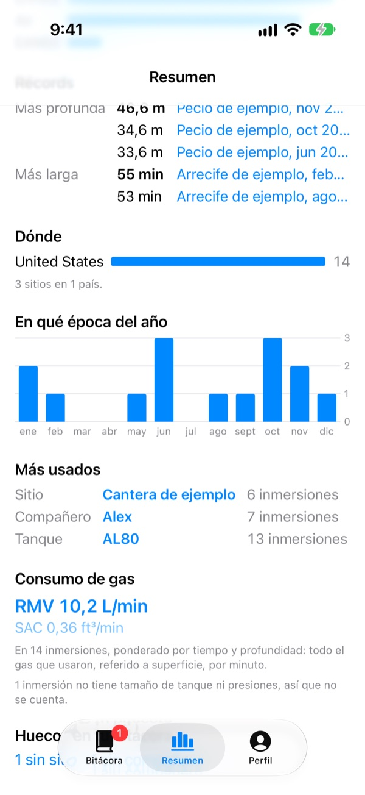

Primero, actualiza todos los dispositivos
Muchos problemas desaparecen cuando todos los dispositivos tienen la build más reciente. Abre TestFlight en cada iPhone, iPad y Mac que uses e instala cualquier actualización. Una build anterior deja de enviar cambios hasta que se actualiza, y dice Actualiza Thermocline para seguir sincronizando. Tus cambios se conservan y se envían después de actualizar.
Descargas de una computadora de buceo
No se encuentra la computadora
- Activa la computadora y ponla en su modo Bluetooth (Shearwater: Menu → Bluetooth). Solo se queda así unos dos minutos.
- Acércala al iPhone, iPad o Mac.
- Las computadoras Shearwater vuelven al último dispositivo que usaron. Si tu teléfono u otra Mac están cerca, desactiva el Bluetooth en ese dispositivo y vuelve a intentarlo.
- Comprueba que el Bluetooth esté activado y que Thermocline tenga permiso para usarlo (iPhone: Configuración → Thermocline; Mac: Configuración del Sistema → Privacidad y seguridad → Bluetooth).
Es una Predator o una Petrel 1 y el iPhone no la ve
Usan un Bluetooth antiguo (Bluetooth Classic) que el iPhone y el iPad no pueden usar. Descárgalas en la Mac (consulta la guía), o importa sus inmersiones desde Shearwater Cloud o un archivo UDDF.
Se conecta, pero pide un PIN
Escribe el código que aparece en la pantalla de la computadora. Solo se necesita la primera vez.
«No hay inmersiones nuevas»
Solo se traen las inmersiones más nuevas que tu última descarga. Si eliminaste una inmersión y la quieres de vuelta, activa Descargar todas las inmersiones de la computadora y vuelve a descargar. Las inmersiones que ya están en tu bitácora se omiten.
La descarga se detuvo a medias
Elige Conservar para guardar las inmersiones que llegaron y luego vuelve a descargar para el resto. Si se sigue deteniendo, elige Reintentar cerca de la computadora y envía el registro de descarga.
Una descarga por cable falla en la Mac
- Comprueba que el puerto coincida con el cable: la lista indica de qué tipo es cada puerto, y avisa cuando no es para el modelo que elegiste.
- Desconecta y vuelve a conectar el cable, y luego usa el botón de actualizar para volver a buscar cables.
- Sigue los pasos de Antes de empezar para tu modelo.
- Las descargas por cable son nuevas. Por favor, envía el registro de descarga en cualquier caso.
Sincronización entre dispositivos
Mi app para iPhone dice que Thermocline ahora es una sola app, o veo dos apps Thermocline
El 18 de noviembre de 2026, las apps para iPhone, iPad, Mac y Apple Watch se convirtieron en una sola app, con un solo enlace de la beta. La app para iPhone que tenías antes ahora solo te ayuda a cambiarte.
- Abre la app anterior. Si dice que la sincronización está desactivada, toca Activar «Sincronizar con iCloud» y déjala abierta un minuto, o toca Exportar mi bitácora como UDDF y guarda el archivo.
- Toca Unirme a la nueva beta, o abre el enlace de la beta en tu iPhone, e instala la nueva app. Aparece junto a la anterior.
- En la nueva app, activa Perfil → Sincronizar con iCloud. Tus inmersiones, sitios, equipo y ajustes vuelven. Si exportaste, usa Perfil → Importar un archivo de bitácora.
- Puede que tengas que volver a enlazar tu computadora de buceo y volver a instalar la app para Watch desde la app Watch de tu iPhone.
- Cuando la nueva app muestre las mismas inmersiones, elimina la anterior.
En una Mac no cambia nada: sigue actualizando la app para Mac como siempre.
Faltan inmersiones o aparecen duplicadas después de sincronizar
- No cambies nada todavía. Toma una captura de pantalla de la sección Sincronización (iPhone: Perfil → Sincronización; Mac: Thermocline → Configuración → Sincronización) en cada dispositivo y envíala.
- Comprueba que todos los dispositivos tengan la build más reciente.
- Perfil → Tus datos → Puntos de restauración puede llevar tu bitácora a antes de una importación, una fusión o una eliminación. Restaurar guarda primero tu bitácora actual, así que se puede deshacer.
Un cambio en un dispositivo no aparece en el otro
- Comprueba que Sincronizar con iCloud esté activado en los dos, con sesión iniciada en la misma Cuenta de Apple.
- Mira Pendiente de enviar en el dispositivo donde hiciste el cambio, y abre la app en los dos con señal. La sección Sincronización indica cuándo este dispositivo y los demás coinciden.
- Presiona Sincronizar ahora.
«No has iniciado sesión en iCloud»
Inicia sesión en iCloud en la Configuración del dispositivo. Mientras tanto, tu bitácora se queda en ese dispositivo, a salvo, y se sincroniza en cuanto inicias sesión.
«Tu almacenamiento de iCloud está lleno»
Tu bitácora está a salvo en el dispositivo y se sincroniza cuando haya espacio. Libera espacio de iCloud, o activa Ahorrar espacio de iCloud en las fotos de inmersión para que las fotos no se guarden dos veces.
«Otro dispositivo usa una versión más nueva»
Actualiza Thermocline en este dispositivo desde TestFlight. Tus cambios están a salvo aquí y se envían después de actualizar.
Importaciones
Algunas inmersiones o datos no llegaron
El informe de importación enumera todo en No importada y Por favor, revisa, con el motivo. Cada bitácora escribe el UDDF un poco distinto, así que es normal que falten valores, y se quedan en blanco. Si falta algo que esperabas, envía el informe y, si puedes, el archivo.
Faltan mi equipo, mis fotos o mis tipos de inmersión de MacDive
La exportación UDDF de MacDive los deja fuera. Importa su XML encima para el equipo, las etiquetas y los tipos de inmersión, y en la Mac importa la carpeta de MacDive para las fotos. Las inmersiones que ya están en tu bitácora no se agregan dos veces. Consulta Qué archivo de MacDive usar.
Faltan el NDL, la ppO₂ o el CNS en las inmersiones de MacDive
La página de la inmersión muestra el NDL como «—» y Deco como «No registrado», o la ppO₂ dice «Calculado a partir del gas y la profundidad». La exportación UDDF de MacDive no incluye el NDL, la ppO₂ ni el CNS de la computadora. Su carpeta no tiene perfil para las inmersiones que MacDive descargó en un iPhone o iPad, porque las guarda cifradas.
Importa también el XML de MacDive: completa lo que falta sin volver a agregar inmersiones. Consulta Qué archivo de MacDive usar.
¿Cambiar entre archivos o apps hará que se pierda algo?
- Tus archivos originales nunca se modifican. Conserva tus exportaciones de MacDive, y conserva MacDive hasta que hayas comparado algunas inmersiones.
- Una segunda importación agrega, no reemplaza. Las inmersiones que ya están en tu bitácora se emparejan y solo reciben lo que les falta, así que puedes importar el XML después del UDDF, o la carpeta después de cualquiera de los dos.
- Puedes volver atrás. Se guarda un punto de restauración llamado Antes de una importación antes de cualquier importación de más de una inmersión (Perfil → Tus datos → Puntos de restauración en el iPhone, Configuración → Puntos de restauración en la Mac). En la Mac, Deshacer importación… en el informe también la revierte.
- Si dejas Thermocline: su exportación UDDF es la completa. Incluye el NDL, la ppO₂ y el CNS de la computadora a lo largo de cada inmersión, el equipo, las etiquetas, los tipos de inmersión y los enlaces de video. Las fotos no van dentro de ningún archivo de exportación.
Las inmersiones importadas no tienen gas
El archivo no indicaba qué gas se usó. Esas inmersiones esperan en Por confirmar para que lo indiques.
Importé el archivo equivocado
En la Mac, usa Deshacer importación… en el informe de importación. En cualquiera de los dispositivos, se guarda un punto de restauración llamado Antes de una importación antes de cualquier importación de más de una inmersión.
Un archivo de Garmin no se importa
- «Es un archivo zip»: Exportar original de Garmin Connect da un .zip. Descomprímelo y luego elige el archivo .fit que contiene.
- «Este no es un archivo FIT de Garmin»: el archivo no es de un reloj Garmin, o solo su nombre termina en .fit. Usa el archivo de la carpeta GARMIN → Activity del reloj, o Exportar original.
- «archivos de Garmin no contienen ninguna inmersión»: los archivos de carreras, caminatas, ajustes y salud se omiten. Solo llegan las inmersiones.
- «parecen incompletos o dañados»: el archivo se cortó a medias, a menudo por una copia o una descarga que no terminó. Se muestra lo que se pudo leer; vuelve a copiar el archivo desde el reloj y vuelve a importarlo para obtener el resto. Las inmersiones que ya están en tu bitácora se omiten.
- Elegir un archivo de Garmin junto con otro archivo de bitácora no se puede hacer de una vez: importa el archivo de bitácora y luego los archivos de Garmin.
Una inmersión de Garmin me pide revisar sus tanques
Con más de un transmisor de tanque, el archivo de Garmin no indica en qué gas estaba cada uno, así que se emparejaron con los tanques de la inmersión por orden. Abre la sección de gas de la inmersión y asegúrate de que cada presión esté en el tanque correcto.
La hora de una inmersión de Garmin tiene una hora de diferencia
La hora viene del reloj del Garmin. Si no estaba en la hora local del lugar donde buceaste, la inmersión aparece con la hora del reloj. Edita la hora de la inmersión, o ajusta la zona horaria del reloj antes del próximo viaje.
Una inmersión de deriva tiene el sitio equivocado
Una inmersión se empareja con el más cercano de dos puntos, donde entraste y donde saliste, que en una deriva suele ser donde entraste. Si se emparejó con el sitio equivocado o con ninguno, elige el sitio en la inmersión y agrega a las notas cualquier otro pecio por el que hayas pasado.
Consumo de gas y SAC
Una cifra de SAC parece incorrecta
Toca o haz clic en ¿Cómo? junto a ella. Muestra cada dato: el tanque y su capacidad en agua, las presiones, la temperatura, la corrección de gas real, el tiempo y la profundidad. La causa habitual es un tamaño de tanque incorrecto; corrígelo en Equipo. Envía una captura de pantalla de la pantalla ¿Cómo? si todavía parece incorrecta.

No hay SAC, solo un mensaje
- Agrega el tamaño del tanque para ver el SAC: elige el modelo del tanque o ingresa su tamaño.
- Agrega las presiones inicial y final para ver el SAC: no hay transmisor, así que ingrésalas en el tanque.
- El SAC necesita un perfil de profundidad: las inmersiones registradas a mano sin perfil no tienen SAC.
- Las inmersiones con rebreather no tienen cifra de SAC.
El SAC solo cuenta un tanque
En una inmersión con varios gases, solo el tanque con el transmisor tiene presiones. Ingresa las presiones inicial y final en el otro tanque y el SAC cubre todo el gas.
Respiración, en Resumen, dice que ninguna inmersión tiene tamaño de tanque
Respiración promedia solo las inmersiones con tamaño de tanque y presiones inicial y final. Las inmersiones del UDDF de MacDive no tienen tamaño de tanque, porque sus tamaños no son capacidades en agua; importar el XML encima los completa (consulta Qué archivo de MacDive usar). Si no, indica el tanque en tus inmersiones (elige su modelo, o un conjunto de equipo) y agrega las presiones donde las tengas. Bajo la cifra, Respiración indica cuántas inmersiones no se contaron.

Fotos
Una foto no aparece en mi otro dispositivo
Con Ahorrar espacio de iCloud en las fotos de inmersión activado, una foto conserva su copia hasta que tu otro dispositivo la encuentra en Fotos en iCloud. Activa el ajuste en los dos dispositivos, comprueba que Fotos en iCloud esté activado en ambos y dale tiempo para que se suba.
No se agregaron los videos
Los videos de tu biblioteca solo se pueden vincular, no copiar. Activa Sincronización → Ahorrar espacio de iCloud en las fotos de inmersión y asegúrate de que el video esté en Fotos en iCloud. O pega un enlace de YouTube o Vimeo debajo de las fotos de la inmersión.
«Thermocline no puede leer tus fotos»
Se negó el acceso a Fotos, así que las fotos se copian en lugar de vincularse. Para vincularlas, permite el acceso en Configuración → Privacidad y seguridad → Fotos → Thermocline.
Sitios y el Apple Watch
El sitio sugerido es incorrecto, o no hay ninguno
Elige otro sitio, busca por nombre en las listas integradas, o marca o escribe la posición tú mismo. Las canteras y los lagos de tierra adentro a menudo faltan en las listas públicas, así que a partir de entonces tus propios sitios van primero en las sugerencias.
Thermocline no está en mi Apple Watch
La app para Watch viene con la app para iPhone de TestFlight. En tu iPhone, abre la app Watch, busca Thermocline en Apps disponibles y toca Instalar. Necesita watchOS 11 o posterior. Si te cambiaste desde la app anterior para iPhone, vuelve a instalarla: la app para Watch anterior pertenece a la app anterior para iPhone.
El reloj dice «Esperando una buena posición» y Marcar lugar sigue en gris
Un lugar se guarda solo a partir de una posición dentro de ±30 m y con menos de 30 segundos de antigüedad, para que una posición equivocada nunca llegue a tu bitácora. Quédate en la superficie con el reloj fuera del agua y una vista despejada del cielo, y dale un minuto. Se ignora una posición antigua en caché significa que está esperando una nueva. El GPS no funciona bajo el agua: marca el lugar antes de descender o al salir a la superficie.
«El acceso a la ubicación está desactivado para Thermocline» en el reloj
En el reloj, abre Configuración → Privacidad y seguridad → Localización, activa Localización y permite que Thermocline la use mientras usas la app.
Un lugar marcado en el Watch no apareció en el iPhone
En el reloj, abre Marcaciones. Esperando para enviar al iPhone significa que el iPhone todavía no lo ha recibido: mantén el reloj cerca de tu iPhone y abre Thermocline en el iPhone. Enviado al iPhone significa que ya está ahí: búscalo en Bitácora → Por confirmar. El iPhone busca el lugar cuando tiene conexión, así que sin señal espera con esperando señal para buscar.
El reloj no mostró un nombre de sitio después de marcar un lugar
El nombre viene de tu iPhone: cuando está cerca y Thermocline puede responder, el reloj muestra bajo el lugar el sitio que sugeriría, uno tuyo o uno de las listas de puntos de inmersión, con la distancia a la que está. Con el iPhone fuera de alcance, el reloj nombra tus propios sitios a partir de la copia que tu iPhone dejó en él, pero no los de las listas de puntos de inmersión. Si no hay ningún sitio a menos de unos 1.5 km, el lugar se marca sin nombre. En cualquier caso, el sitio lo eliges en el iPhone, en Bitácora → Por confirmar.
El nombre que dije en el reloj no se guardó
El nombre se guarda cuando se cierra el dictado o el teclado, o cuando regresas. Abre Marcaciones, toca el lugar y revisa su nombre; toca Cambiar el nombre para intentarlo de nuevo. Si el lugar ya se envió, el nombre lo sigue hasta el iPhone.
¿El reloj registra mis inmersiones?
No. La app Thermocline para Watch solo marca lugares en la superficie. Tus inmersiones vienen de tu computadora de buceo. Para los relojes Garmin Descent, importa sus archivos .fit: consulta Garmin Descent en la guía.
Un lugar desapareció del reloj
Es lo esperado. Un lugar sale del reloj una vez que se confirma o se descarta en el iPhone. Un lugar confirmado es un sitio en tu bitácora y se sincroniza con tus otros dispositivos.
Enviar un informe o un registro de descarga
- Desde la app: toma una captura de pantalla y luego usa Compartir opinión sobre versión en TestFlight. Llega con la build y el dispositivo adjuntos.
- Registro de descarga, iPhone: en la pantalla de descarga, toca Registro de descarga y luego compártelo. Solo incluye los mensajes de Bluetooth y de la computadora, sin datos de inmersiones.
- Registro de descarga, Mac: en la ventana de descarga, elige Registro de descarga…, luego Guardar registro…, y adjunta el archivo.
- Correo: brian@616labs.net, con tu dispositivo, el número de build (aparece en TestFlight) y lo que esperabas que pasara.